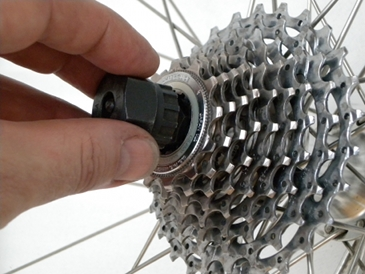
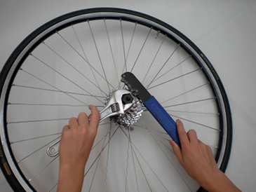
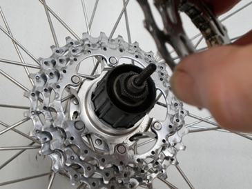
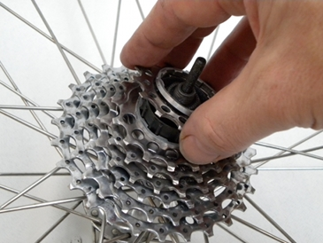

| Replace cassette |
|
| Written by BikeFixer |
|
Steps 1. Access the cassette2. Remove cassette 3. Fit cassette 4. Fit rear wheel |
|
Put chain onto small sprocket at rear: Move the chain onto a high, small gear on the rear cassette (the wheel is easier to remove and replace this way). Remove wheel and skewer: Open the quick release levers, and unscrew a turn or two. Then push the rear wheel out of the rear drop outs, extract the quick-release skewers and place the wheel on a flat surface, with cassette uppermost. |
||||
Insert and orient lockring tool: Drop the lockring tool into the cassette. You will need the lockring tool that fits your type of cassette. Grip the lockring tool with the adjustable spanner and orient the spanner so that you can turn it anticlockwise with your left hand. Attatch and orient chainwhip: Place the chain of the chain whip on the middle sprocket (cog) of the cassette and orient the handle so that you can turn it clockwise with your right hand. Unscrew the lockring: Simulataneously turn the spanner anticlockwise, and the chain whip clockwise - the tools act against each other, the chainwhip holding the cassette in place whilst the spanner unscrews the lockring. Lockrings become tighter with pedalling, so some force may be necessary to get the lockring loose. But once it has started to unscrew, the lockring should not be too difficult to remove. Slide off the cassette: Notice the sequence of spacers and sprockets (cogs/gears). |
||||
|

Insert lockring tool |

Turn chainwhip and lockring in opposite directions |
|||
Buy kit?Tools you need for this fix. |
Ads. Selected by BikeFixer | |
 |
Buy Lockring Remover |
 |
 |
Buy Chainwhip |
|
Slide on cassette: Align the pattern of grooves on the cassette with the splines on the hub, and slide on the cassette. The smallest gears may be separate from the main cluster, so slide these on in sequence, using the spacers provided. Screw on lockring: You will not need to use the chainwhip for this step - the lockring should be snug and secure, but not too tight - usage will keep it in place. |
||||
|

Slide cassette onto hub |

Add individual sprockets |
|||
Replace the skewer in the wheel. Pull the derailleur open with your finger, then work the wheel up and in to engage a small sprocket with the chain. Continue to work the wheel up until it is well seated in the frame drop outs. Finally, secure the wheel by screwing in, and then closing the quick release lever. |
||||